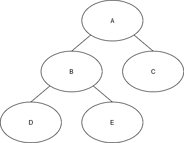
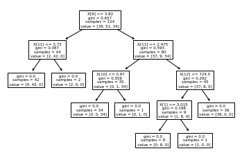
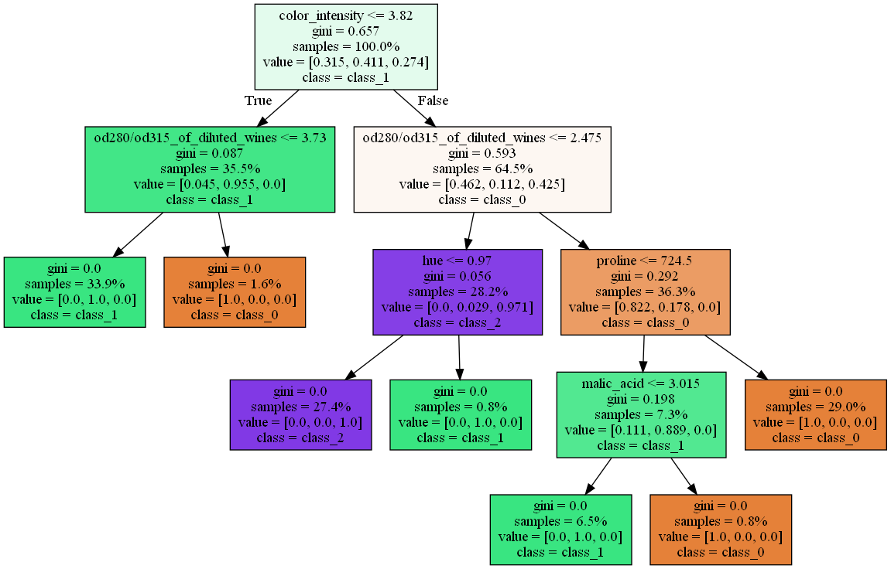
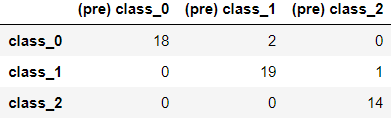

身為資料分析&機器學習的超級新手，個人還是覺得實際操作一遍比理論更好理解， 這次練習的是之前曾草草帶過的機械學習工具scikit-learn，主題就決定是決策樹了
首先要提一下決策樹，決策樹顧名思義是一種樹形結構，利用層層推理來進行數據的分類，決策樹的構成可分為：
以下圖範例來看的話，A就是根節點，C、D、E則是葉節點，剩餘的B就是內部節點

本次練習的參考資料：
做好的結果也可直接觀看https://github.com/mikanbearer/experiments/blob/master/tree.ipynb
scikit-learn提供了很多練習用的資料集方便練習，這次練習使用load_wine()，可以從DESCR查看詳細資料
from sklearn import datasets
wine = datasets.load_wine()
print(wine.keys())
#dict_keys(['data', 'target', 'frame', 'target_names', 'DESCR', 'feature_names'])
print(wine.DESCR)
'''
.. _wine_dataset:
Wine recognition dataset
------------------------
**Data Set Characteristics:**
:Number of Instances: 178 (50 in each of three classes)
:Number of Attributes: 13 numeric, predictive attributes and the class
:Attribute Information:
- Alcohol
- Malic acid
- Ash
- Alcalinity of ash
- Magnesium
- Total phenols
- Flavanoids
- Nonflavanoid phenols
- Proanthocyanins
- Color intensity
- Hue
- OD280/OD315 of diluted wines
- Proline
- class:
- class_0
- class_1
- class_2
:Summary Statistics:
============================= ==== ===== ======= =====
Min Max Mean SD
============================= ==== ===== ======= =====
Alcohol: 11.0 14.8 13.0 0.8
Malic Acid: 0.74 5.80 2.34 1.12
Ash: 1.36 3.23 2.36 0.27
Alcalinity of Ash: 10.6 30.0 19.5 3.3
Magnesium: 70.0 162.0 99.7 14.3
Total Phenols: 0.98 3.88 2.29 0.63
Flavanoids: 0.34 5.08 2.03 1.00
Nonflavanoid Phenols: 0.13 0.66 0.36 0.12
Proanthocyanins: 0.41 3.58 1.59 0.57
Colour Intensity: 1.3 13.0 5.1 2.3
Hue: 0.48 1.71 0.96 0.23
OD280/OD315 of diluted wines: 1.27 4.00 2.61 0.71
Proline: 278 1680 746 315
============================= ==== ===== ======= =====
:Missing Attribute Values: None
:Class Distribution: class_0 (59), class_1 (71), class_2 (48)
:Creator: R.A. Fisher
:Donor: Michael Marshall (MARSHALL%PLU@io.arc.nasa.gov)
:Date: July, 1988
This is a copy of UCI ML Wine recognition datasets.
https://archive.ics.uci.edu/ml/machine-learning-databases/wine/wine.data
The data is the results of a chemical analysis of wines grown in the same
region in Italy by three different cultivators. There are thirteen different
measurements taken for different constituents found in the three types of
wine.
Original Owners:
Forina, M. et al, PARVUS -
An Extendible Package for Data Exploration, Classification and Correlation.
Institute of Pharmaceutical and Food Analysis and Technologies,
Via Brigata Salerno, 16147 Genoa, Italy.
Citation:
Lichman, M. (2013). UCI Machine Learning Repository
[https://archive.ics.uci.edu/ml]. Irvine, CA: University of California,
School of Information and Computer Science.
.. topic:: References
(1) S. Aeberhard, D. Coomans and O. de Vel,
Comparison of Classifiers in High Dimensional Settings,
Tech. Rep. no. 92-02, (1992), Dept. of Computer Science and Dept. of
Mathematics and Statistics, James Cook University of North Queensland.
(Also submitted to Technometrics).
The data was used with many others for comparing various
classifiers. The classes are separable, though only RDA
has achieved 100% correct classification.
(RDA : 100%, QDA 99.4%, LDA 98.9%, 1NN 96.1% (z-transformed data))
(All results using the leave-one-out technique)
(2) S. Aeberhard, D. Coomans and O. de Vel,
"THE CLASSIFICATION PERFORMANCE OF RDA"
Tech. Rep. no. 92-01, (1992), Dept. of Computer Science and Dept. of
Mathematics and Statistics, James Cook University of North Queensland.
(Also submitted to Journal of Chemometrics).
'''
為了方便練習，用pandas做成DataFrame
import pandas as pd
wine_data = pd.DataFrame(data=wine.data, columns=wine.feature_names)
print(wine_data.head())
'''
alcohol malic_acid ash ... hue od280/od315_of_diluted_wines proline
0 14.23 1.71 2.43 ... 1.04 3.92 1065.0
1 13.20 1.78 2.14 ... 1.05 3.40 1050.0
2 13.16 2.36 2.67 ... 1.03 3.17 1185.0
3 14.37 1.95 2.50 ... 0.86 3.45 1480.0
4 13.24 2.59 2.87 ... 1.04 2.93 735.0
[5 rows x 13 columns]
'''
wine_target = pd.DataFrame(data=wine.target)
print(wine_target.head())
'''
0
0 0
1 0
2 0
3 0
4 0
'''
'''
'''
在這裡利用train_test_split分割出"訓練集(training set)“與"測試集(test set)"，訓練集是模型擬合用的樣本資料，而測試集則是預留下來對結果進行評價
from sklearn.model_selection import train_test_split
x_train, x_test, y_train, y_test = train_test_split(wine_data, wine_target, test_size=0.3)
print(wine_data.shape)
#(178, 13)
print(x_train.shape)
#(124, 13)
print(x_test.shape)
#(54, 13)
這個DecisionTreeClassifier就是咱們的分類器，要使用剛才的資料來訓練模型，就把剛才分出來的訓練集往分類器裡面丟，當然也可以是資料的狀況設定max_depth或max_leaf_nodes，這樣決策樹就完成了，能使用plot_tree()來看看訓練的結果
from sklearn.tree import DecisionTreeClassifier, plot_tree
clf = DecisionTreeClassifier()
clf.fit(x_train, y_train)
plot_tree(clf)
'''
[Text(136.96363636363637, 195.696, 'X[9] <= 3.82\ngini = 0.657\nsamples = 124\nvalue = [39, 51, 34]'),
Text(60.872727272727275, 152.208, 'X[11] <= 3.73\ngini = 0.087\nsamples = 44\nvalue = [2, 42, 0]'),
Text(30.436363636363637, 108.72, 'gini = 0.0\nsamples = 42\nvalue = [0, 42, 0]'),
Text(91.30909090909091, 108.72, 'gini = 0.0\nsamples = 2\nvalue = [2, 0, 0]'),
Text(213.05454545454546, 152.208, 'X[11] <= 2.475\ngini = 0.593\nsamples = 80\nvalue = [37, 9, 34]'),
Text(152.1818181818182, 108.72, 'X[10] <= 0.97\ngini = 0.056\nsamples = 35\nvalue = [0, 1, 34]'),
Text(121.74545454545455, 65.232, 'gini = 0.0\nsamples = 34\nvalue = [0, 0, 34]'),
Text(182.61818181818182, 65.232, 'gini = 0.0\nsamples = 1\nvalue = [0, 1, 0]'),
Text(273.92727272727274, 108.72, 'X[12] <= 724.5\ngini = 0.292\nsamples = 45\nvalue = [37, 8, 0]'),
Text(243.4909090909091, 65.232, 'X[1] <= 3.015\ngini = 0.198\nsamples = 9\nvalue = [1, 8, 0]'),
Text(213.05454545454546, 21.744, 'gini = 0.0\nsamples = 8\nvalue = [0, 8, 0]'),
Text(273.92727272727274, 21.744, 'gini = 0.0\nsamples = 1\nvalue = [1, 0, 0]'),
Text(304.3636363636364, 65.232, 'gini = 0.0\nsamples = 36\nvalue = [36, 0, 0]')]
'''

前面的小樹實在慘不忍睹，這裡就用graphviz來將決策樹繪製出來
import pydotplus
from IPython.display import Image
from sklearn.tree import export_graphviz
dot_data = export_graphviz(
clf,
out_file=None,
feature_names=wine.feature_names,
class_names=wine.target_names,
filled=True,
proportion=True)
graph = pydotplus.graph_from_dot_data(dot_data)
Image(graph.create_png())

經過決策樹分歧產生的預測和測試集中的實際資料對比
from sklearn.metrics import confusion_matrix
df = pd.DataFrame(confusion_matrix(y_test,clf.predict(x_test).reshape(-1,1)))
df = df.rename(columns=dict(zip(df.columns, ['(pre) ' + name for name in wine.target_names])), index=dict(zip(df.columns, wine.target_names)))
df

算出評分，這次勉強還行，因為神經網路的隨機性，有時還會只有0.8左右
clf.score(x_test,y_test)
#0.9444444444444444